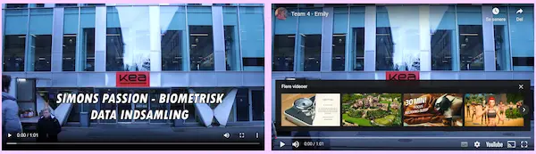
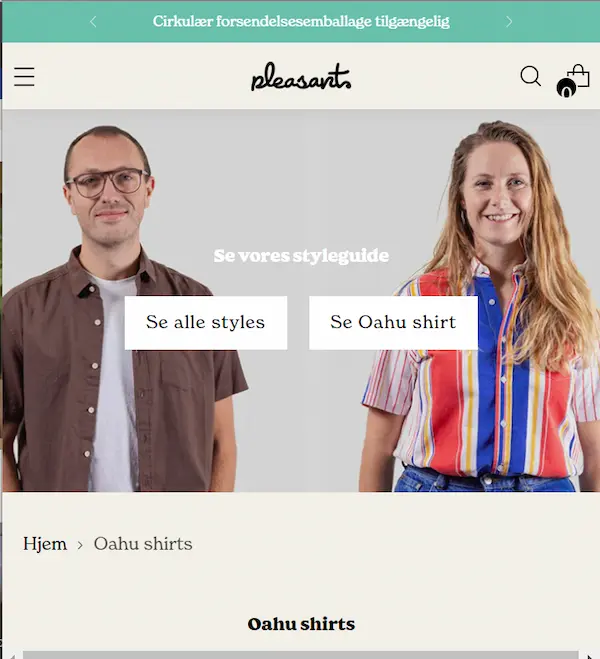
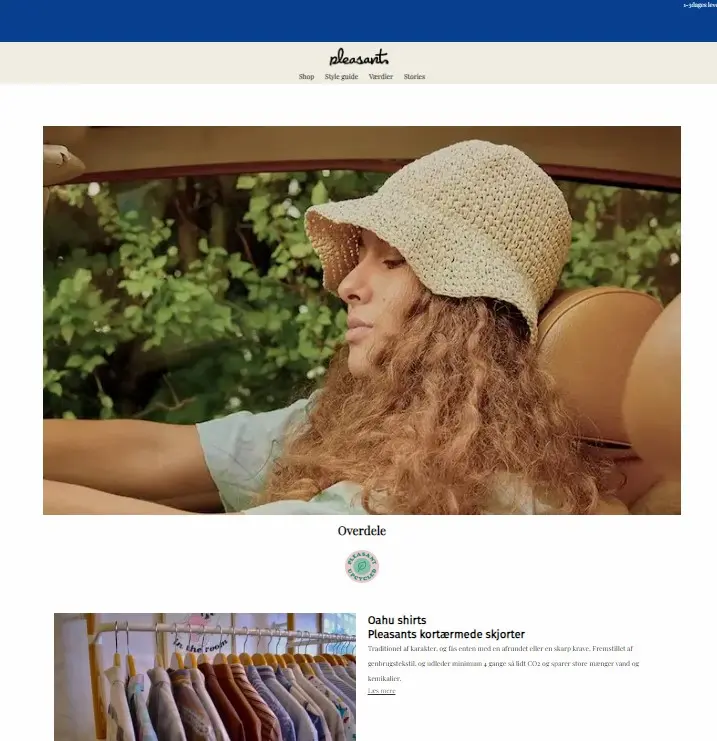

Grundlæggende animation
I tema 5 arbejdede vi i teams. Målet var at lave et redesign af en virksomheds hjemmeside. Derfor skulle vi lære at redigere video og lyd i Premiere Pro. Vi lærte at samarbejde om et fælles projekt, at sætte video ind i vscode, at bruge apps som DJI mimo og rød reporter. Vi lærte at bruge kamera og mikrofoner, fordi det skulle vi bruge til projektet.
Videosite
Vi begyndte med at lave videositeopgaven, som gik ud på at lave en video på 1 minut om en person, som snakker om sin passion, og så skulle vi lægge videoen ind i et site. Jeg lagde videoen ind på 2 forskellige måder, via URL og youtube. Formålet var at øve os på videoredigering i Premiere pro.
Virksomhedsite
I denne opgave skulle vi lave et redesign af en virksomheds hjemmeside. Vi skulle også filme og redigere et 3 minutter langt interview og en 30 sek video til sociale medier. For at finde en virksomhed lavede vi desk-research hvor vi fandt virksomheder i nærheden, som også kunne have brug for et redesign. Da vi fandt en virksomhed som ville arbejde med os, begyndte vi at researche for at finde deres budskab og USP er. Deres brand er bæredygtighed og da vi besøgte butikken fik vi et indtryk af en afslappet atmosfære, det matchede også udstrålingen af deres website.
Vi gik efter at beholde den afslappede stil men samtidig sofistikeret, det gjorde vi med hjælp af farvepaletten hvor vi fik fra varm til kølig som gør det mere moderne og appellerende til en bredere målgruppe.
